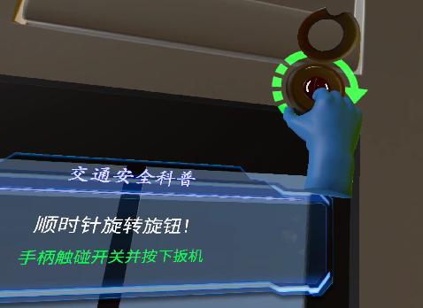
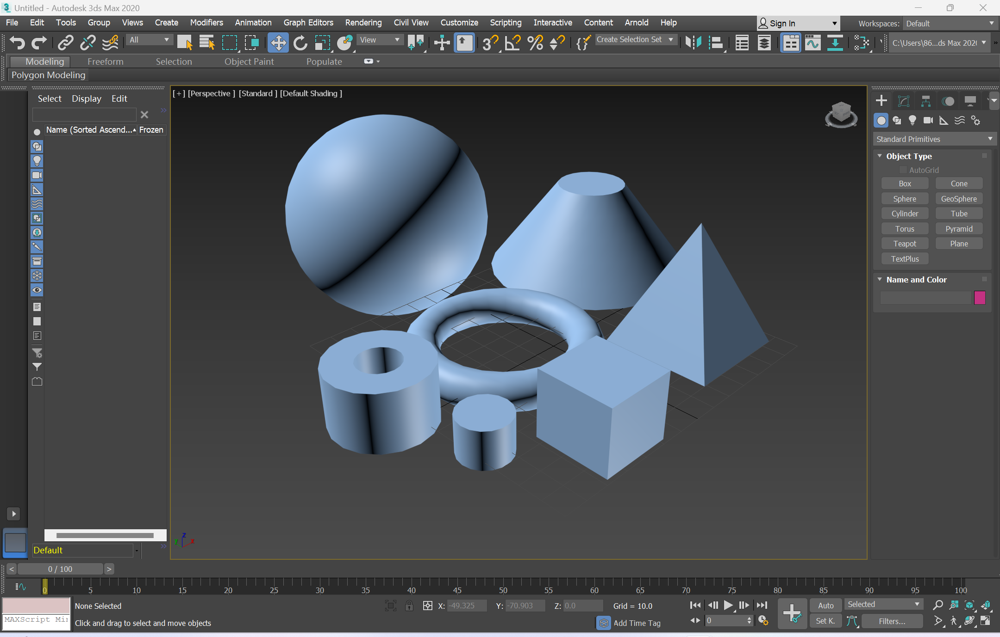
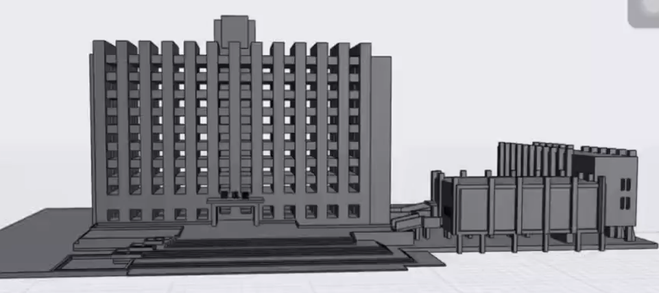

VR在应急中的运用
应急事件场景的还原
VR技术能够提供高度逼真的应急场景模拟，使参与者身临其境地面对突发公共安全事件，从而加强其应急反应和处置能力。通过沉浸式的体验，参与者可以更加深入地理解应急救援的流程和技能，提高他们的实战能力。

应急场景还原示例
通过VR技术还原火灾、地震、洪水等灾害场景，让参与者在虚拟环境中体验灾害发生过程，学习应对策略。
编译3D场景的工具
Unity
Unity是实时3D互动内容创作和运营平台，包括游戏开发、美术、建筑、汽车设计、影视在内的所有创作者，借助Unity将创意变成现实。在VR领域，Unity可用于构建沉浸式3D场景，支持VR设备的开发与部署。

3ds MAX
3ds MAX（3D Studio Max）是基于PC系统的三维动画渲染和制作软件，可以建模、渲染、做动画、特效等，是一款综合全能型三维软件。在VR场景构建中，可用于创建高精度的3D模型，为VR环境提供高质量的视觉素材。

3D场景案例：华科楼
基于华科楼的实际建筑结构，使用3ds MAX进行建模，Unity构建VR场景，实现校园环境的虚拟还原。该场景可用于校园应急演练、校园导航等应用场景，为用户提供沉浸式的校园体验。

VR场景构建流程
-
1
需求分析
明确VR场景的用途和目标，分析用户需求和使用场景
-
2
3D建模
使用3ds MAX等工具创建场景模型，包括建筑、环境等元素
-
3
VR场景构建
在Unity中导入模型，添加交互逻辑和VR支持功能
-
4
测试与优化
进行VR场景测试，优化性能和用户体验
工具特点对比
Unity
- 支持VR设备
- 可视化编程
- 跨平台部署
3ds MAX
- 高精度建模
- 复杂场景构建
- 材质渲染
基于VR的未来展望
VR产业优势
多场景
使用相关的编辑器搭建更多的3D场景，与VR相结合，覆盖应急、教育、医疗等多个领域
跨平台合作
将VR设备逐渐实现跨平台的融合，实现无缝切换，降低用户的使用成本，提供设备的普及率
体验多元化
提供更多的选择，适时更新新的应急场景，并随时进行调整，满足不同用户需求
与AI深度融合
与AI（人工智能）深度融合，帮助用户更好的理解虚拟世界，提供更加智慧化的服务。同时也可以为VR内容提供更多的可能性，例如智能生成虚拟角色、场景等。
// AI与VR融合示例
// 智能生成虚拟角色
function generateVirtualCharacters() {
// 1. 使用AI模型生成虚拟角色
const characterModel = loadAIModel('character_generator');
// 2. 根据场景需求生成角色
const characters = characterModel.generate({
scene: 'earthquake_rescue',
count: 5,
types: ['victim', 'rescuer', 'doctor']
});
// 3. 将角色导入VR场景
vrScene.addCharacters(characters);
// 4. AI驱动角色行为
characters.forEach(character => {
character.setBehavior(AIBehavior);
});
}
可视化与仿真化
可视化
在搭建场景前可以利用VR技术对整个场景进行推敲演示，分析各场景优劣，避免失误
高度仿真化
VR技术能更好的展示灾害发生的场景，高度还原更多的灾害事故
多维度融合
结合5G、云计算等技术，实现VR场景的实时渲染和远程共享，支持多人同时在线参与VR体验